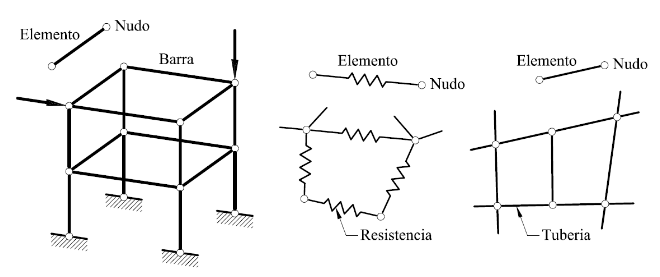

Método de los Elementos Finitos
Esta sección está dedicada a dar un rápido paseo a por el Método de Elementos Finitos. Usaremos un ejemplo para ayudar a visualizar como el método funciona, pero no nos adentraremos demasiado en la lógica matemática que le da sentido a todo.
Descripción Rápida Para empezar
La principal ventaja de utilizar los modelos físicos es la de predecir el valor de una cantidad desconocida. Sin embargo, no todos las ecuaciones físicas son simples de resolver. Frecuentemente encontramos situaciones que, a pesar de conocer la Ecuación Diferencial que rige el problema, no hay una forma directa de calcular su solución. El Método de Elementos Finitos (o FEM, del inglés Finite Element Method) es una de las técnicas existente para solventar este problema.
Dentro del ámbito de la ingeniería, la matemática aplicada, y la física, son básicamente tres las áreas en las que el FEM se aplica:
- Problemas de equilibrio (estacionarios): aquellos en los cuales el sistema no varía en el tiempo.
- Problemas de autovalores: que constituyen una extensión de los problemas de equilibrio, en los cuales se determinan valores críticos de ciertos parámetros.
- Problemas de propagación: aquellos que comprenden a los fenómenos no estacionarios, es decir, dependientes del tiempo.

Figura 1. Herramienta de soporte separada en piezas de tamaño regular para su análisis mediante el FEM.
Sistemas discretos y Sistemas Continuos Introducción
Muchos problemas con los que se encuentra el ingeniero en su labor cotidiana puede caracterizarse por sistemas cuyos comportamiento puede expersarse por modelos matemáticos, más o menos complejos, en los que interviene un conjunto de parámetros.
Una manera natural de abordar el estudio del comportamiento del sistema es simplificar el modelo matemático en lo posible. La opción más sencilla es subdividir el sistema en partes o elementos de estudio sencillo, para luego volverlo a reconstruir ensamblando la contribución de cada elemento y predecir así su comportamiento.
En los sistemas discretos, las partes que componen el sistema son evidentes, claramente diferenciables y conectadas entre sí por uniones comúnmente llamadas nudos. En la figura que acompaña éste texto se pueden apreciar algunos ejemplos de sistemas discretos.
Habitualmente, en éstos casos, el resultado del proceso de análisis se reduce a un sistema de ecuaciones lineales simultáneas con variables nodales como incógnitas, a partir de cuya solución se obtendrá el comportamiento del sistema.
En los sistemas continuos, por otro lado, la subdivisión puede proseguir de manera indefinida, con lo que el problema sólo podrá expresarse mediante el concepto de infinitésimo. Esto deriva en un modelo matemático expresado por ecuaciones diferenciales en derivadas parciales, que han de ser satisfechas en todos y cada uno de los puntos del sistema.
Los sistemas continuos se analizan como sistemas discretos a través de un proceso de discretización.
En general, salvo casos muy simples, la solución analítica o exacta de las ecuaciones diferenciales que gobiernan el comportamiento de sistemas continuos es, o bien imposible, o bien demasiado laboriosa. Depende del analista el obtener respuestas aproximadas sobre el comportamiento del sistema, a través de técnicas que reduzcan su problema de infinitas variables incógnitas a un número finito cuya resolución resulte más accesible.
Sí quieres contribuír a éste documento en particular, tanto como por sugerencias, cambios, o correcciones ortográficas, puedes hacerlo directamente en GitHub.